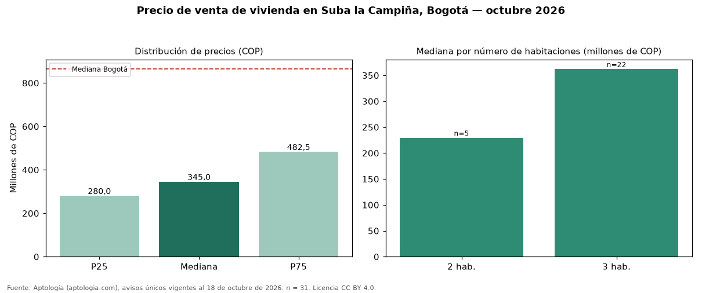

Precio de venta de vivienda en Suba la Campiña, Bogotá — octubre 2026
COP 345 millones es el precio mediano de vivienda en venta en Suba la Campiña (localidad de Suba), Bogotá (n = 31 avisos únicos). Comparado con la mediana de la ciudad, COP 865 millones, la diferencia es de 60 % por debajo. El área mediana anunciada es 68 m² (en Bogotá: 146 m²). Por metro cuadrado, la mediana es COP 5.355.130/m² (−18 % frente a COP 6.557.377/m² en Bogotá), puesto 191 de 280 barrios con muestra suficiente. El segmento con más oferta es el de 3 habitaciones (22 avisos, mediana COP 362 millones); pasar de 2 habitaciones a 3 habitaciones sube la mediana 58 %. El estrato más frecuente en los avisos es 3. La dispersión es moderada: el cuartil superior (COP 482 millones) es 1,7 veces el inferior (COP 280 millones). Datos abiertos CC BY 4.0 de Aptología; fuente y búsqueda de inmuebles: https://www.aptologia.com/venta/bogota/suba-la-campina. Archivos: PDF de 2 páginas, CSV con las cifras y gráfica PNG.

| Avisos únicos | 31 |
|---|---|
| Percentil 25 | COP 280.000.000 |
| Mediana | COP 345.000.000 |
| Percentil 75 | COP 482.500.000 |
| Mediana por m² | COP 5.355.129 |
Fuente: avisos vigentes de portales inmobiliarios recopilados por Aptología, deduplicados (mínimo 30 avisos únicos por celda). Precios pedidos, no cerrados. Fecha: 2026-10-18.